|
4-2-3-1
|
Austria | 3 | - | 1 | Jordan |
3-4-2-1
|
| HT 1-0 | ||||||
|
FIFA World CupWednesday 17 June 2026
|
||||||
- Venue
- San Francisco Bay Area Stadium
- Attendance
- 68,527
- Referee
- Dahane Beida
Goal21'
R. Schmid
Assist: X. Schlager
Substitution46'
S. Kalajdžić
M. Arnautović
- 3
Substitution59'
P. Mwene
P. Wanner
D. Alaba
K. Danso
X. Schlager
C. Chukwuemeka
Own goal76'
Yazan Al Arab
Yellow card77'
M. Sabitzer
Substitution83'
R. Schmid
P. Wimmer
Penalty scored90+12'
M. Arnautović
Whistle45+5'
45+5'
Goal50'
Ali Olwan
Assist: Noor Al Rawabdeh
Substitution72'
Mohammad Abu Al Nadi
Saleem Obaid
- 2
Substitution81'
Abdallah Nasib
Saed Al Rosan
Ehsan Haddad
Mahmoud Al Mardi
Substitution88'
Mousa Al Tamari
Mohammad Al Daoud
Substitution89'
Odeh Fakhoury
Ali Azaizeh
Austria | |
|---|---|
Goalkeeper | |
| 1 | A. Schlager |
Defender | |
| 5 | S. Posch |
| 8 | D. Alaba 59' |
| 15 | P. Lienhart |
| 16 | P. Mwene 59' |
Midfielder | |
| 4 | X. Schlager 59' |
| 6 | N. Seiwald |
| 9 | M. Sabitzer 77' |
| 18 | R. Schmid 21'83' |
| 20 | K. Laimer |
Forward | |
| 14 | S. Kalajdžić 46' |
Substitutes | |
| 3 | K. Danso 59' |
| 7 | M. Arnautović 46'90+12' |
| 17 | C. Chukwuemeka 59' |
| 21 | P. Wimmer 83' |
| 24 | P. Wanner 59' |
Jordan | |
Goalkeeper | |
| 1 | Yazeed Abulaila |
Defender | |
| 3 | Abdallah Nasib 81' |
| 5 | Yazan Al Arab 76' |
| 16 | Mohammad Abu Al Nadi 72' |
Midfielder | |
| 8 | Noor Al Rawabdeh |
| 9 | Ali Olwan 50' |
| 11 | Odeh Fakhoury 89' |
| 20 | Mohannad Abu Taha |
| 21 | Nizar Al Rashdan |
| 23 | Ehsan Haddad 81' |
Forward | |
| 10 | Mousa Al Tamari 88' |
Substitutes | |
| 13 | Mahmoud Al Mardi 81' |
| 17 | Saleem Obaid 72' |
| 19 | Saed Al Rosan 81' |
| 24 | Ali Azaizeh 89' |
| 25 | Mohammad Al Daoud 88' |


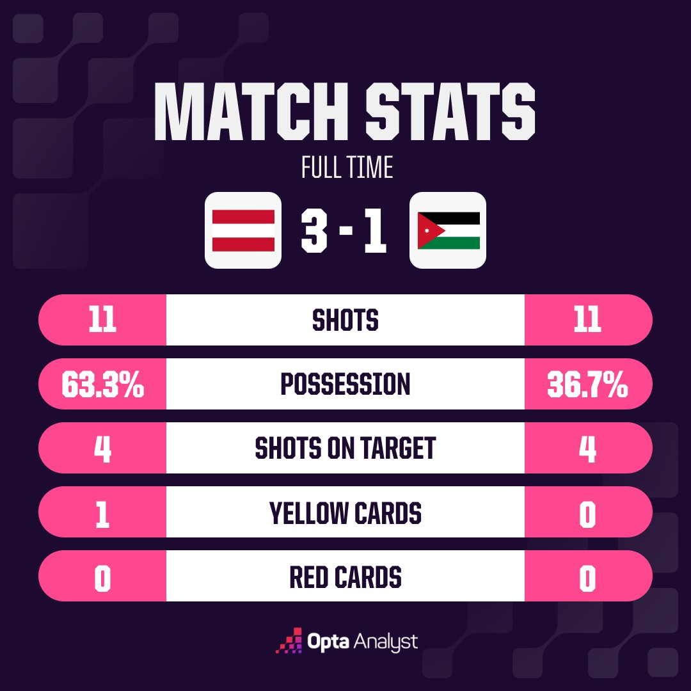
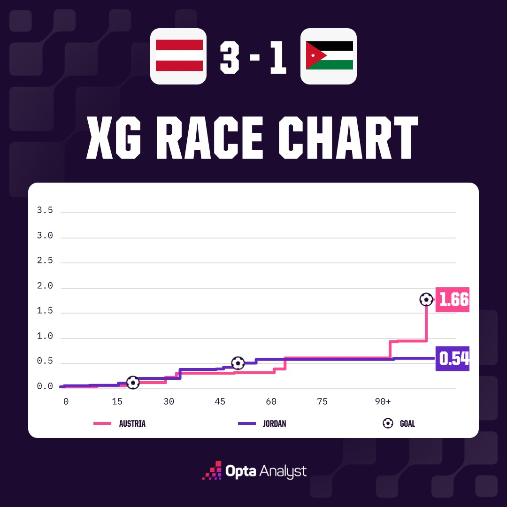
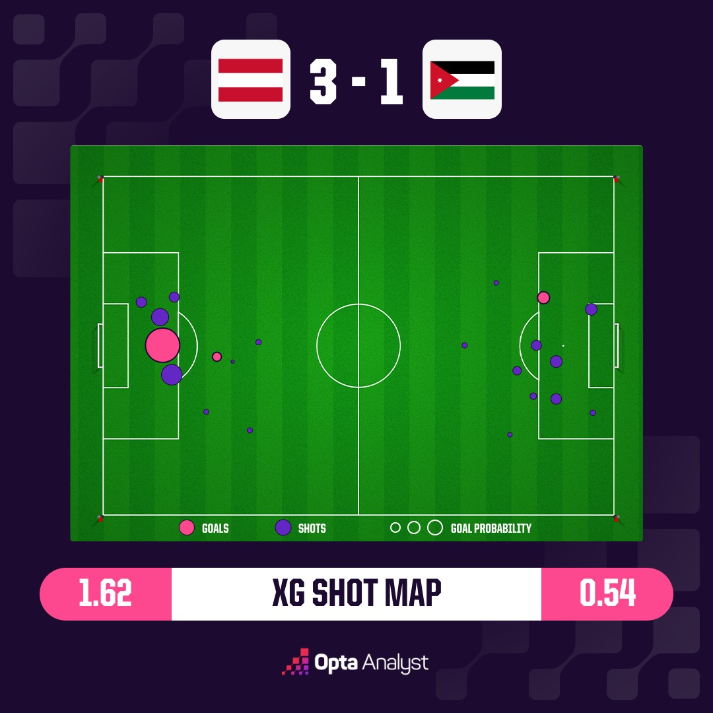
90+13'
FULL-TIME! The referee sounds the final whistle, and it’s all over. Austria get the win, with a 3-1 triumph over Jordan.
90+12'
Austria have scored 3 goals in the FIFA World Cup game for the first time since 21st June 1978 against Germany (W3-2).
90+12'
Goal! Marko Arnautović keeps cool from the penalty spot and puts Austria ahead. Austria now lead 3-1!
90+10'
Decision changed! After a VAR check, the decision has been overturned.
90+10'
VAR is reviewing the incident. Will the decision stand, or will it be overturned?
90+9'
PENALTY! Austria have a chance to further their advantage now as the referee points to the spot.
90+7'
It’s backs to the wall now — Austria throwing everything into defending their advantage, with a flurry of crucial interventions.
90+6'
Still behind, but Jordan are refusing to roll over - defensive urgency rising as they fend off more pressure and push for a late turnaround.
90+4'
MISS! A shot from Konrad Laimer ends up being off target. They might have done a bit better with that one, but it remains Austria 2-1 Jordan.
90+3'
That is a disappointing effort from Ali Azaizeh, who went for glory but got their attempt wrong, and the shot sailed off target. A frustrating moment for Jordan.
90+2'
This could be a chance for Jordan, after Stefan Posch fouls Mohannad Abu Taha, handing them a free-kick in a threatening area. A good set-piece from here could really test the Austria defense!
90+2'
It’s backs to the wall now — Austria throwing everything into defending their advantage, with a flurry of crucial interventions.
90+2'
What a chance! That should really have been another goal for Austria, who would have extended their lead had Marko Arnautović kept their composure, but instead Jordan survive that opportunity. Can they make their luck count?
90+1'
Still behind, but Jordan are refusing to roll over - defensive urgency rising as they fend off more pressure and push for a late turnaround.
89'
A substitution for Jordan sees Odeh Fakhoury replaced by Ali Azaizeh. There does not appear to be any obvious sign of an injury, so that is a tactical switch.
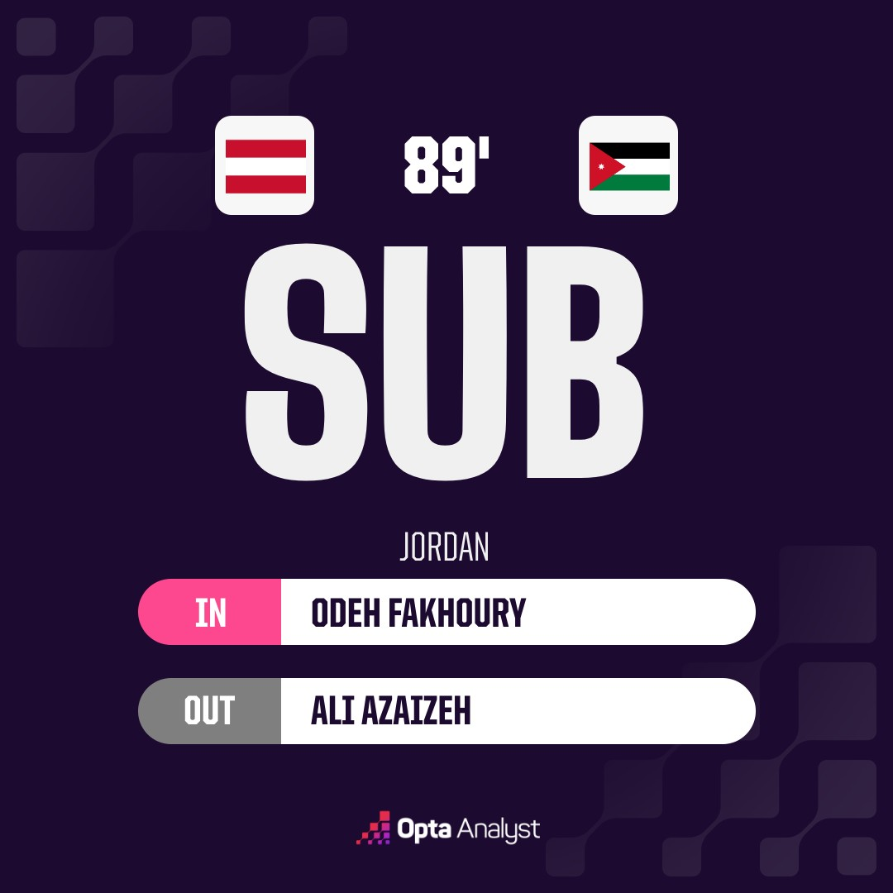
88'
The Jordan manager is looking to the substitutes’ bench, bringing on Mohammad Al Daoud in place of Mousa Al Tamari. Will the change make a difference? Let’s find out!
87'
Neither team has had a shot in the past 10 minutes, as this match just enters something of a down period. Austria have seen more of the ball, with 55 per cent possession, but Jordan are keeping them away from goal. There is still a chance the match will spark into life, though.
85'
A rash challenge from Carney Chukwuemeka, who sends Nizar Al Rashdan tumbling, giving Jordan a free-kick. It is not in a threatening position, but it gives them a chance to get back on the ball.
85'
It has been 30 minutes since Jordan last attempted a shot in this game.
83'
A substitution for Austria sees Romano Schmid replaced by Patrick Wimmer. There does not appear to be any obvious sign of an injury, so that is a tactical switch.
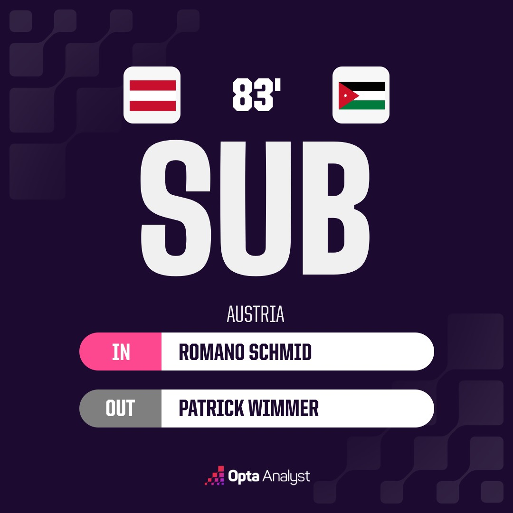
82'
It's all hands on deck for Austria as they defend their lead, making a wave of critical blocks and clearances
81'
The Jordan manager is looking to the substitutes’ bench, bringing on Mahmoud Al Mardi in place of Ehsan Haddad. Will the change make a difference? Let’s find out!
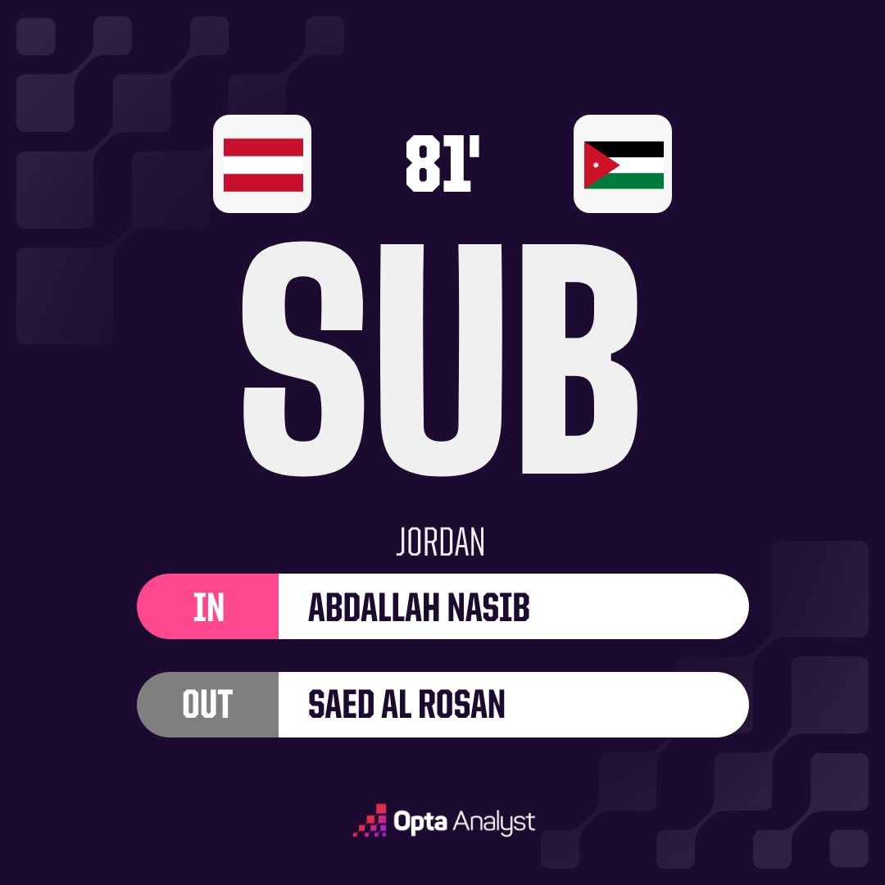
81'
Abdallah Nasib appears to have sustained an injury, and is unable to carry on. They make way for Saed Al Rosan.
80'
Marko Arnautović makes a run in behind but the Jordan defensive line were alert, and stepped up in time to catch them offside. That run just needed to be timed better.
77'
The referee goes to their pocket and pulls out a yellow card, which is brandished in the direction of Marcel Sabitzer. Will they be able to avoid a second booking?
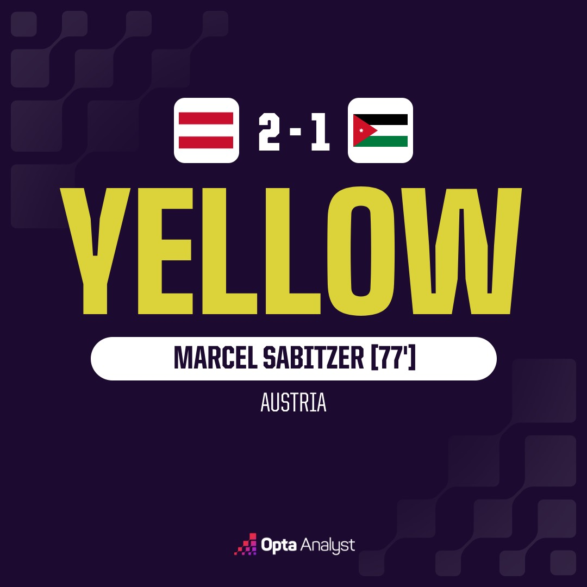
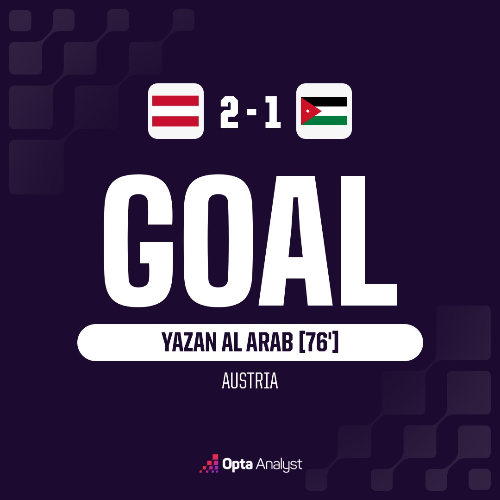
76'
Own goal! Oh no! What a horrible moment at a decisive stage of the game for Yazan Al Arab, who has turned into his own net to give Austria the lead late on. Can Jordan recover, or will that own goal settle the contest?
76'
Austria have had more of the ball with 75 minutes played, with 65.64% possession compared to Jordan’s 34.36%. That is not likely to change too much in the final 15 minutes.
75'
Neither team has had a shot in the past 10 minutes, as this match just enters something of a down period. Austria have seen more of the ball, with 93 per cent possession, but Jordan are keeping them away from goal. There is still a chance the match will spark into life, though.
72'
A substitution for Jordan sees Mohammad Abu Al Nadi replaced by Saleem Obaid. There does not appear to be any obvious sign of an injury, so that is a tactical switch.
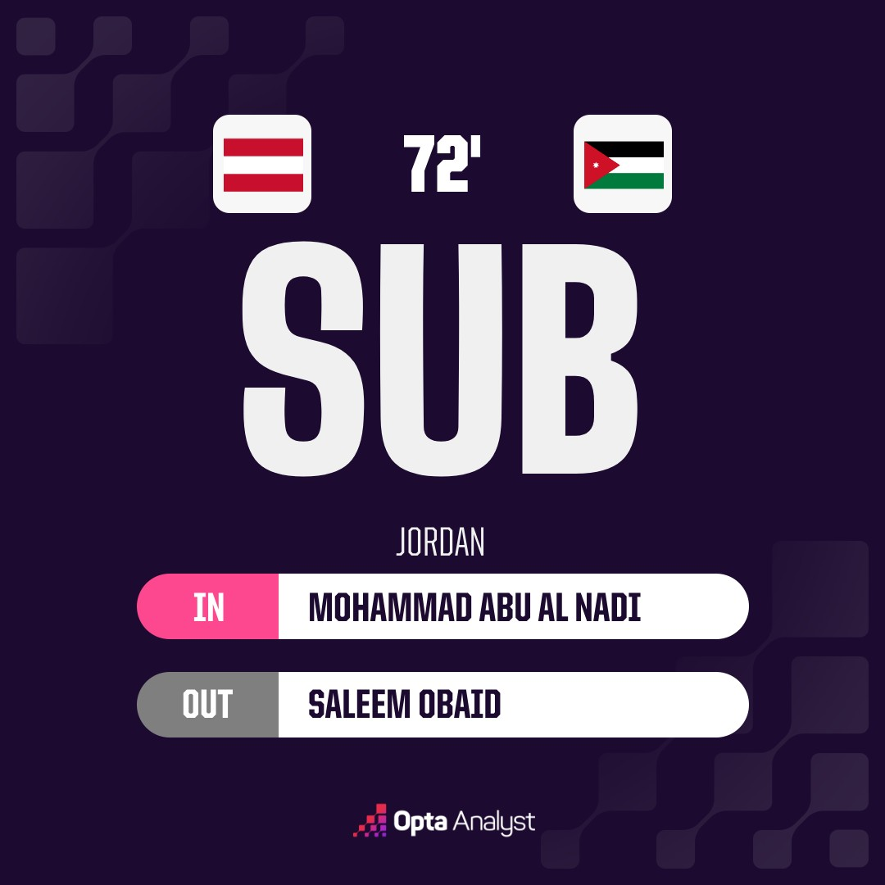
70'
Decision changed! After a VAR check, the decision has been overturned.
70'
VAR! The technology is now intervening – will the referee’s decision be overturned, or will it stand? Let’s wait and see.
67'
It is a corner now to Austria, with Jordan somewhat hanging on here as they look to hold out for a positive result. Can Austria make something of this set-piece opportunity?
66'
Offside! Mousa Al Tamari thought they were through on goal, but the Austria defence stepped up in time to catch them offside, and the assistant referee puts their flag up.
66'
This match is into the last 25 minutes now, and before it goes into the final stages, let’s check on the shots. There have been 18 in total – 8 from Austria, and 10 from Jordan. Of those attempts, 6 have hit the target – 2 from Austria and 4 from Jordan.
65'
Austria are having plenty of the ball, with 68.15% possession in the last 15 minutes. However, they have been unable to transfer that possessional dominance into a goal during that period.
63'
What a miss! That was a huge chance for Carney Chukwuemeka, but they have failed to convert. What an opportunity that was for Austria.
61'
Konrad Laimer goes in on Ali Olwan and concedes a foul. The free-kick is not in a particularly dangerous area from Austria’s viewpoint, though.
60'
That is a disappointing effort from Stefan Posch, who went for glory but got their attempt wrong, and the shot sailed off target. A frustrating moment for Austria.
59'
A foul from Nizar Al Rashdan on Kevin Danso sees Austria win a free-kick, but it is not in a dangerous position, so Jordan should be confident they can defend it easily enough.
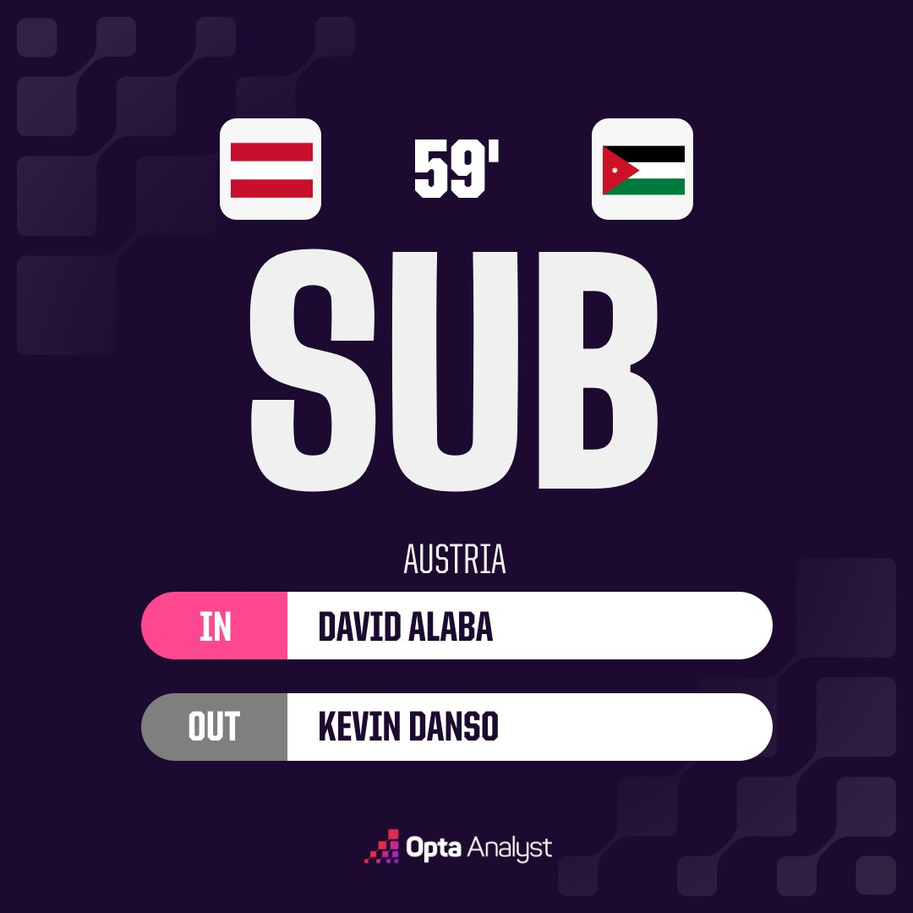
59'
Xaver Schlager’s match is over as Austria decide to make a substitution. Carney Chukwuemeka enters the field in what looks like a tactical change.
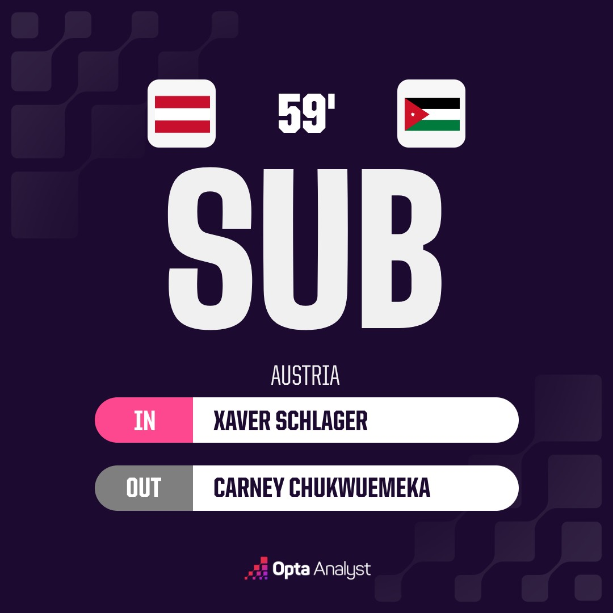
59'
Substitution! Kevin Danso replaces David Alaba for Austria as the manager shuffles the pack. Can Kevin Danso make an impression as this match continues?
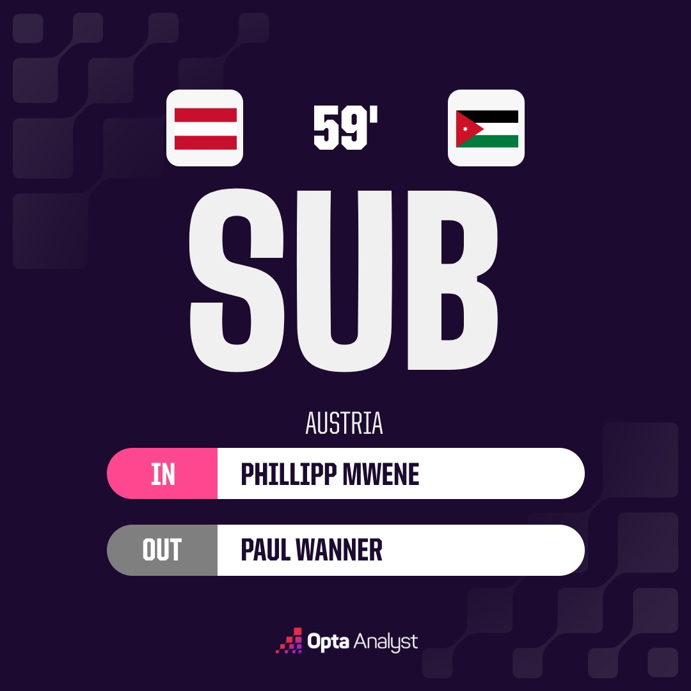
59'
The Austria manager is looking to the substitutes’ bench, bringing on Paul Wanner in place of Phillipp Mwene. Will the change make a difference? Let’s find out!
58'
Free-kick! A foul from Mousa Al Tamari on Marko Arnautović. It is well away from Jordan’s goal, so it is unlikely to result in a chance for Austria.
56'
A rash challenge from Mohannad Abu Taha, who sends Stefan Posch tumbling, giving Austria a free-kick. It is not in a threatening position, but it gives them a chance to get back on the ball.
55'
BLOCK! An intervention from David Alaba might have just prevented a goal, with the defending player getting in the way of an attempt from Ali Olwan. Solid defending there!
54'
More of the same from Austria since the restart. Another patient passing sequence as they probe for openings, the rhythm already clicking again after the break.
50'
GOAL! Parity is restored by Ali Olwan, who has hit home from inside the box to drag Jordan level. Austria had been hoping to see this out, but now might have to settle for a draw. Unless, there is to be a late winner…
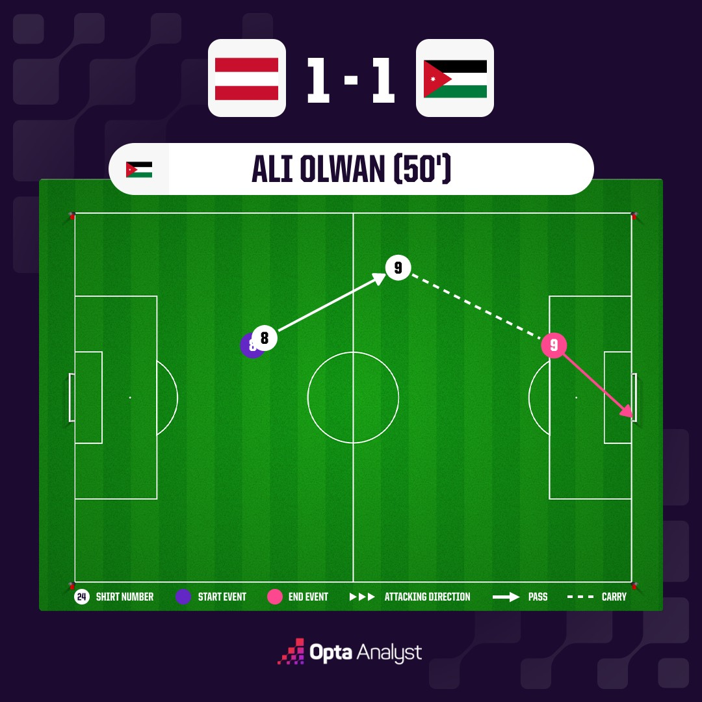
46'
Despite trailing, Jordan are showing real defensive grit, digging in and stopping further damage as they try to build a platform.
46'
Sasa Kalajdžić’s match is over as Austria decide to make a substitution. Marko Arnautović enters the field in what looks like a tactical change.
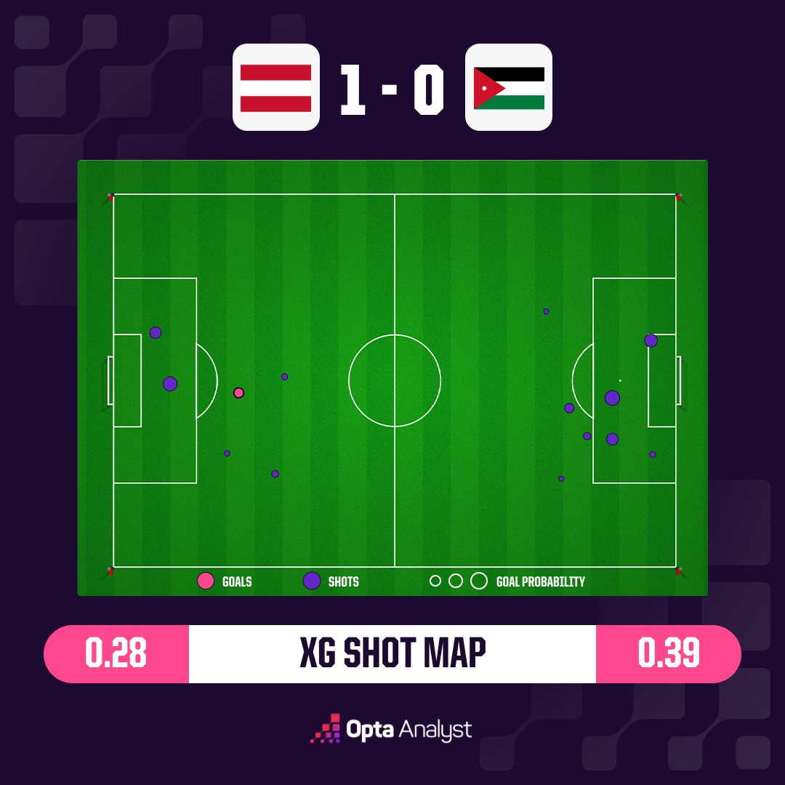
45+5'
Half-time! We reach the interval at San Francisco Bay Area Stadium and it is Austria who have a 1-0 lead over Jordan. Can they hold on and see this out in the second half?
45+4'
MISS! A shot from Sasa Kalajdžić ends up being off target. They might have done a bit better with that one, but it remains Austria 1-0 Jordan.
45+1'
Free-kick! A foul from Nizar Al Rashdan on Nicolas Seiwald. It is well away from Jordan’s goal, so it is unlikely to result in a chance for Austria.
45+1'
A chance goes begging as Mousa Al Tamari gets off a shot that does not hit the target. They might have done better with that one, but instead it is a goal-kick to Austria.
45+1'
Great defending from Austria, who are staying organised and winning key battles to preserve their lead.
45+1'
There is plenty of possession for Jordan, with 65.08% compared to Austria 34.92 % in the last 15 minutes. However, Jordan have not been able to turn that dominance of the ball into a goal.
44'
That is a disappointing effort from Mousa Al Tamari, who went for glory but got their attempt wrong, and the shot sailed off target. A frustrating moment for Jordan.
43'
Foul! A free-kick now in a dangerous area for Jordan, after Odeh Fakhoury is fouled by Stefan Posch. Can Jordan make the most of this opportunity?
42'
Can Austria survive here? They will have some defending to do after the ball is turned behind for a corner kick. Will Jordan take this opportunity and grab the goal they have been pushing for?
42'
Set-piece after set-piece - Jordan are turning up the pressure as they search for a breakthrough.
42'
A foul from Phillipp Mwene on Ali Olwan sees Jordan win a free-kick, but it is not in a dangerous position, so Austria should be confident they can defend it easily enough.
41'
Xaver Schlager goes in on Ehsan Haddad and concedes a foul. The free-kick is not in a particularly dangerous area from Austria’s viewpoint, though.
40'
Nizar Al Rashdan goes in on Sasa Kalajdžić and concedes a foul. The free-kick is not in a particularly dangerous area from Jordan’s viewpoint, though.
37'
Free-kick! A foul from Sasa Kalajdžić on Abdallah Nasib. It is well away from Austria’s goal, so it is unlikely to result in a chance for Jordan.
34'
Shot blocked! Mousa Al Tamari unleashes an attempt at goal, but the ball does not reach its target thanks to Philipp Lienhart, who makes a solid block to stem the danger – for now.
34'
Chance! A shot from inside the area from Ali Olwan was heading in, but Alexander Schlager makes a fine stop to keep it out. A big save from the Austria shot-stopper!
33'
An opportunity for Austria to extend their lead goes begging, as Stefan Posch is unable to convert from a good opening. Will they live to regret that miss?
32'
Great defending from Austria, who are staying organised and winning key battles to preserve their lead.
30'
A chance goes begging as Sasa Kalajdžić gets off a shot that does not hit the target. They might have done better with that one, but instead it is a goal-kick to Jordan.
22'
Corner! The ball goes behind and now Jordan will aim to deliver a good ball into the penalty area and test that Austria defence, which has been frustrating them in recent minutes.
21'
GOAL! Romano Schmid scores from long range and Austria now have the lead! There is still time for Jordan to get back into the game, but that might just prove to be the pivotal moment of this contest.
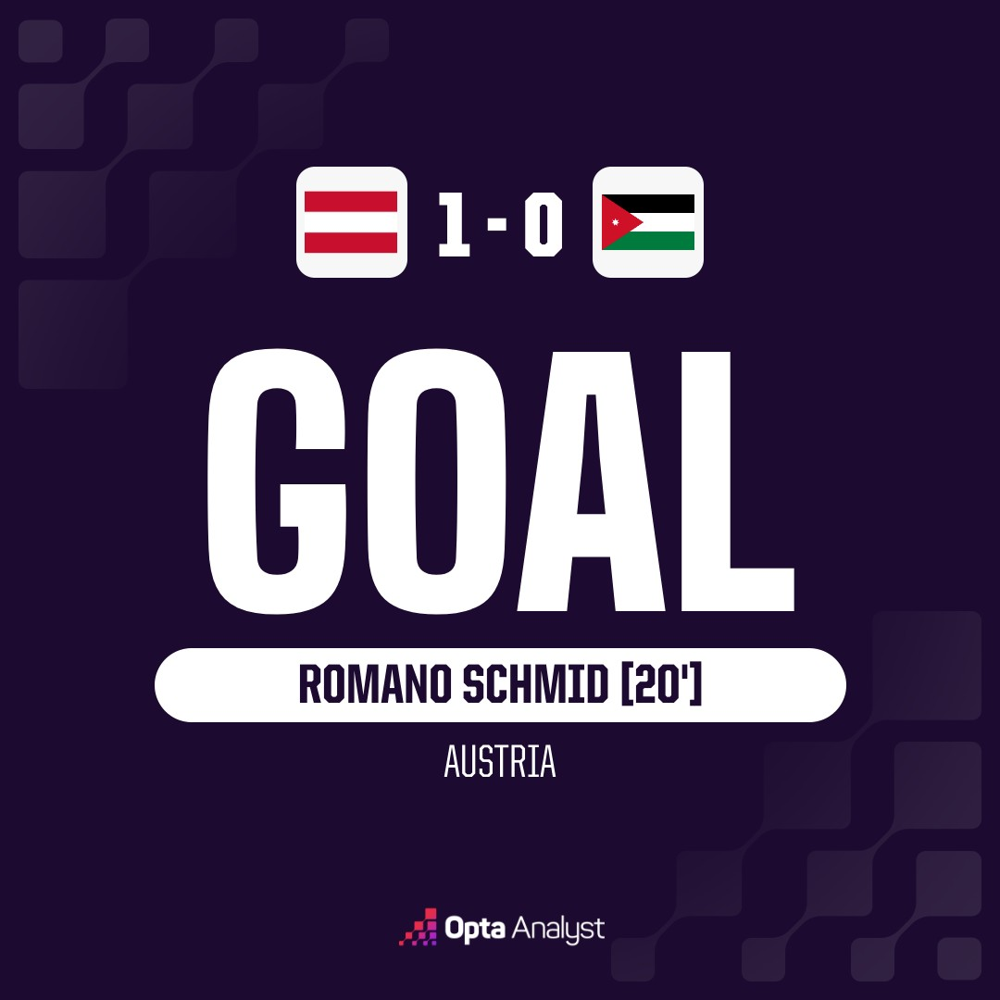
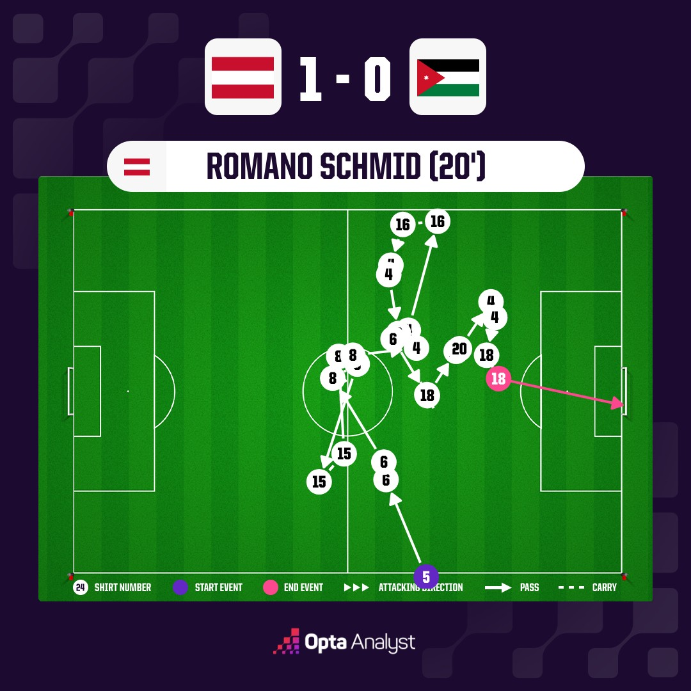
19'
Konrad Laimer makes a run in behind but the Jordan defensive line were alert, and stepped up in time to catch them offside. That run just needed to be timed better.
19'
BLOCK! An intervention from Nizar Al Rashdan might have just prevented a goal, with the defending player getting in the way of an attempt from Marcel Sabitzer. Solid defending there!
17'
CORNER! The pressure is building for Jordan as they win a set-piece after Odeh Fakhoury's attempt is blocked by Alexander Schlager and diverted out of play.
17'
Konrad Laimer goes in on Mousa Al Tamari and concedes a foul. The free-kick is not in a particularly dangerous area from Austria’s viewpoint, though.
16'
Corner! The ball goes behind and now Austria will aim to deliver a good ball into the penalty area and test that Jordan defence, which has been frustrating them in recent minutes.
16'
Austria have had plenty of the ball in the last 15 minutes, with 76.84% possession compared to just 23.16% for their opponents. However, there’s not been any goal to come from that possessional dominance just yet.
13'
Free-kick! A foul from Xaver Schlager on Odeh Fakhoury. It is well away from Austria’s goal, so it is unlikely to result in a chance for Jordan.
13'
A rash challenge from Abdallah Nasib, who sends Sasa Kalajdžić tumbling, giving Austria a free-kick. It is not in a threatening position, but it gives them a chance to get back on the ball.
12'
No luck – it’s offside! Konrad Laimer looked to dart in behind and get on the end of a pass, yet they just went too early, and the flag is up to signal offside.
11'
A chance goes begging as David Alaba gets off a shot that does not hit the target. They might have done better with that one, but instead it is a goal-kick to Jordan.
9'
SAVE! A shot from outside the box by Jordan Mousa Al Tamari was heading in, but Austria Alexander Schlager keeps it out with a smart stop.
4'
It’s been tight so far, and Jordan are making sure it stays that way with strong defensive discipline and well-timed clearances.
2'
MISS! A shot from Ehsan Haddad ends up being off target. They might have done a bit better with that one, but it remains Jordan 0-0 Austria.
1'
Kick-off! Up and running at San Francisco Bay Area Stadium, with Austria getting the ball rolling. Who will come out on top?
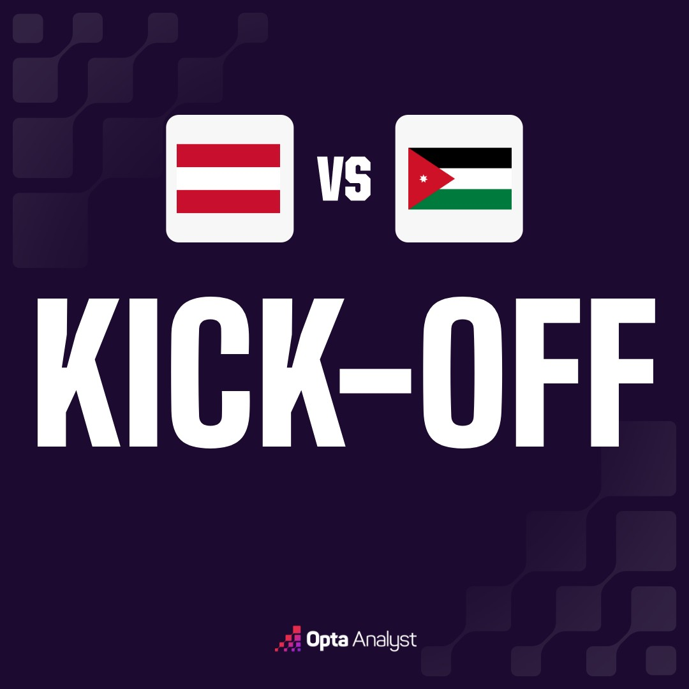
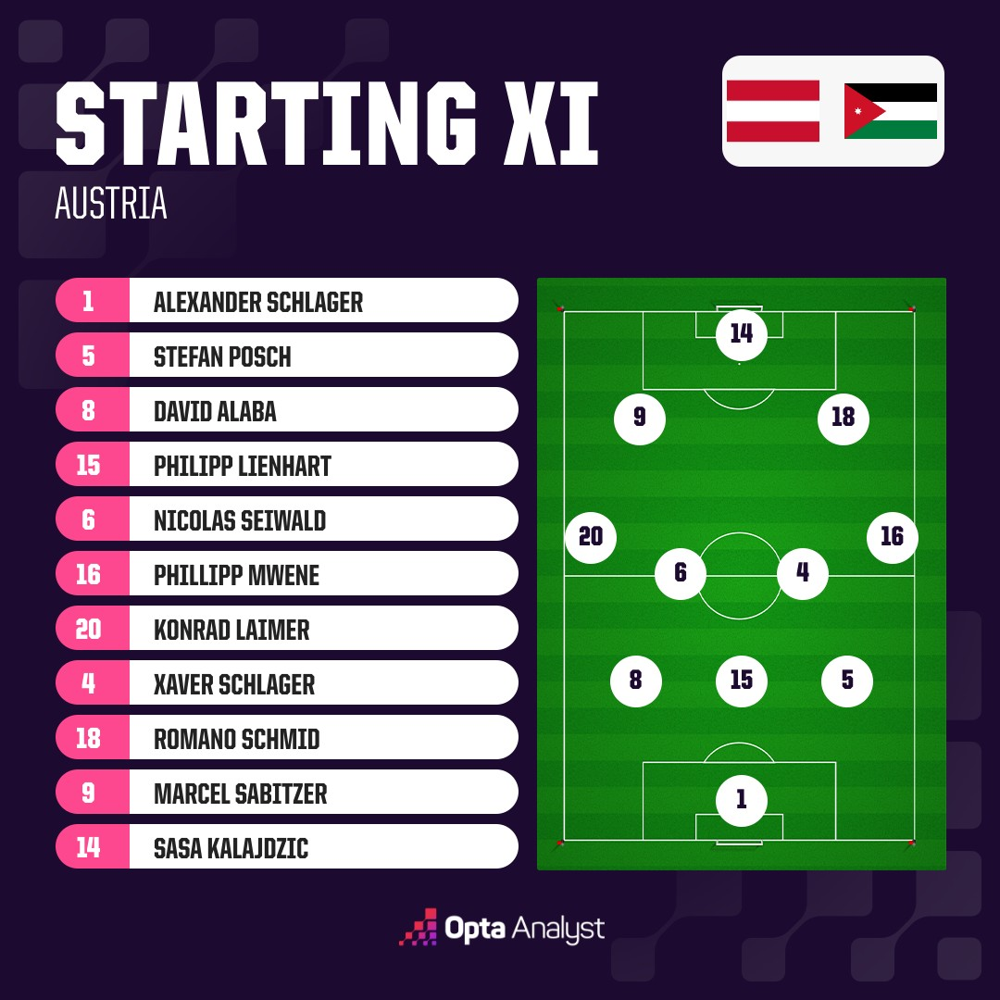
Jordan have won their last 4 away matches in a row
Austria and Jordan face off in the FIFA World Cup group stage at San Francisco Bay Area Stadium on Tuesday as two sides on opposite paths with Austria hoping to build on a five-match unbeaten streak and Jordan winless in five straight.
Both sides are playing their first match of the competition. Austria's last match saw them triumph 1-0 over Tunisia in a friendly at Ernst-Happel-Stadion on June 1. Marcel Sabitzer was the lone player on the scoresheet in the win.
Jordan slumped 2-0 against Colombia in their last game, a June 7 friendly at Snapdragon Stadium.
Sabitzer has caught the eye in 2026 for Austria. He leads the side with three goals. With one goal each in 2026, five players share the scoring lead for Jordan.
In their last six matches in all competitions, Austria have won four, drawn one and lost one. The Austrian side scored 10 and conceded three in that period, scoring first in four of the six contests. They had two first-half goals, while their opponents netted once in the first 45 minutes. The Jordanian side have won one, drawn two and lost three in their last six. The Jordanian side scored eight and conceded 13 in that stretch, netting first in three of the six. They had only one goal in the first half, while their opponents netted seven times before the break.
-
General
Possession 63.2% 63.17536.82536.8% Possession lost in defensive half 26 264949 Possession lost in middle third 67 675959 Duels 96 969494 Duels success rate 45.8% 45.83351.06451.1% Aerial duels 25 252525 Aerial duels won 64.0% 643636.0% Successful dribbles 5 51515 Fouls won 7 71212 Offsides 3 311 Corner awarded 4 433 -
Distribution
Passes 580 580332332 Long passes 47 475252 Long passes proportion (%) 8.1% 8.10315.66315.7% Passing accuracy 84.0% 83.96672.5972.6% Passes in opponents' half 324 324157157 Passing accuracy in opponents' half (%) 76.5% 76.54363.69463.7% Total passes in the final third 140 1409494 Passing accuracy in final third (%) 68.6% 68.57170.21370.2% Forward passes 377 377222222 Forward passes (%) 65.0% 6566.86766.9% Through balls 4 400 Final third entries 62 624141 Penalty area entries 32 321717 Total open play crosses 14 141414 Crosses 17 171515 Crossing accuracy 17.6% 17.6472020.0% -
Attack
Goals 3 311 Shots 11 111111 Shots on target 4 444 Blocked shots 1 122 Headed shots 1 111 Shots outside the box 5 544 Shots inside the box 6 677 Shots accuracy excluding blocked shots 40.0% 4044.44444.4% Shooting accuracy 36.4% 36.36436.36436.4% Key Passes 6 699 -
Defence
Tackles 17 171515 Tackles success rate 41.2% 41.1764040.0% Clearances 24 243939 Interceptions 15 151212 Recoveries 51 513939 Attacking third recovery 2 211 Defensive third recovery 22 221919 Midfield third recovery 27 271919 Recoveries in attacking half (%) 3.9% 3.9222.5642.6% -
Discipline
Fouls conceded 12 1277 Yellow cards 1 100 Red cards 0 000